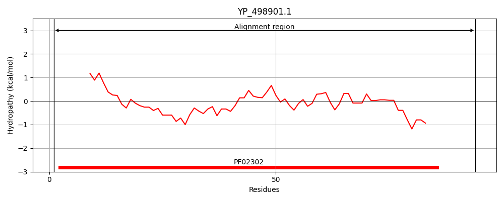
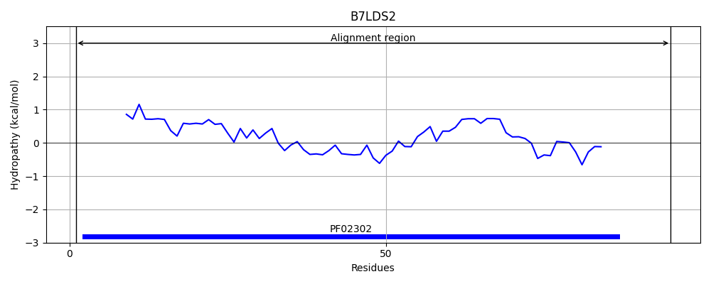
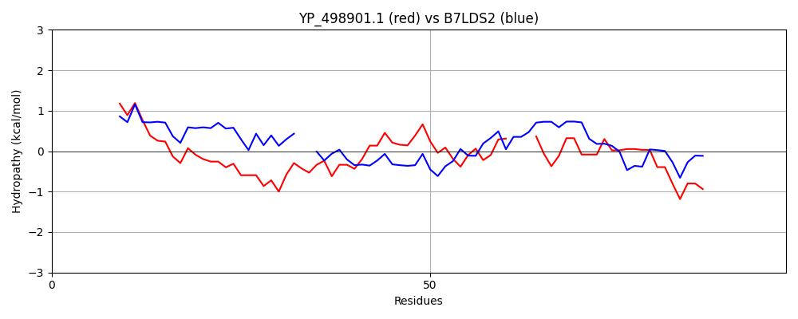

Hit Accession: B7LDS2
Hit TCID: 4.A.7.1.2
Hit Description: gnl|BL_ORD_ID|2036 gnl|TC-DB|B7LDS2|4.A.7.1.2 Putative PTS system, specific IIB component OS=Escherichia coli (strain 55989 / EAEC) GN=vpeB PE=4 SV=1
Mach Len: 97
e:0.000000
Query TMS Count : 0
Hit TMS Count: 0
TMS-Overlap Score: 0.000000
Predicted Substrates:None
BLAST Alignment:
| Protein Hydropathy Plots: | |
|---|---|
|  |  |
Pairwise Alignment-Hydropathy Plot: | |
|  | |